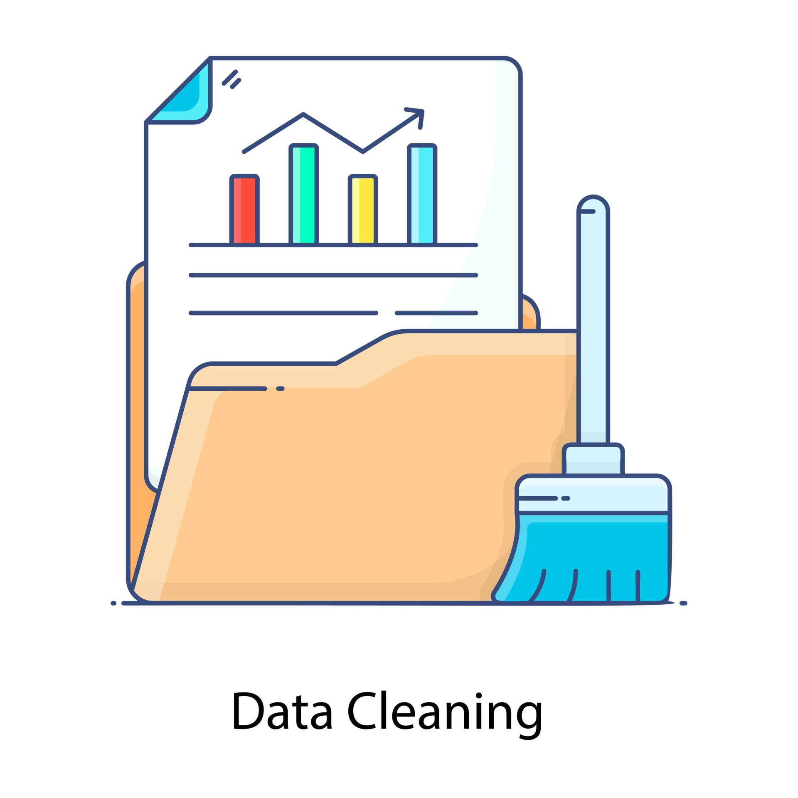

This project is a web scraping application that automates the process
of extracting data from websites and inputting data in a CSV file. With the ability to scrape
data from web pages using libaries such as BeautifulSoup and smtplib, this project showcases my
proficiency in data collection, web automation, and programming
skills. The project has potential applications in market research,
data analysis, and machine learning.

This project is a cryptocurrency API that retrieves real-time data
on the latest market trends and trading volumes. With easy-to-use
code and a variety of data visualization tools, users
can monitor the crypto market and make informed investment
decisions. The project demonstrates my proficiency
in data analysis, API integration, and programming skills.
It has potential applications for traders, investors, and
financial analysts.

This project is an SQL data cleaning project that sanitizes
COVID-19 data and housing project data. With a focus on data
quality and accuracy, the project showcases my
proficiency in SQL data manipulation, data cleaning, and database
management. The project has potential applications in public
health, urban planning, and policy research.
Using the data generated from the SQL covid-19 exploration project, I used Tableau to construct visualizations of some of the important insights that were queried.
In this project, I cleaned a housing dataset that contained null values, redundant data, duplicates,
and structural problems. In order to complete this project, I used convert, update, windows, cases, CTEs, ISNULL, Parsename, alter, delete, and partitions
to complete this project.
In this project, I compiled survey data on professionals that hold various data-centric titles in their organization.
I transformed the data to make it better-organized and improve the quality of the dashboard.
After the transformation, I assembled various insights into easy-to-read visualizations.

In this project, I cleaned various dimension tables and fact tables to make them ready for
Power BI. The tables that I cleaned contained years of data pertaining to sales information, customer information,
and product information.
After cleaning the necessary data tables through SQL Server, I constructed 3 seperate dashboards
in order to track various components of the company. The file contains a sales overview dashboard,
customer overview dashboard, and products overview dashboard that key stakeholders may refer to at any time.
In this excel project, I used a real estate company’s data to keep track of their listings, listing’s city, agent (seller’s agent, buyer’s agent, or dual agent), listing price, sold price, sale date, and many more characteristics. A number of calculations and
conditional functions were used, such as SWITCH, DAYS, various IF statements, nested AND, IMPT, PPMT, APR, and many more. For further analysis, I created a map chart to indicate the average house selling price by city.